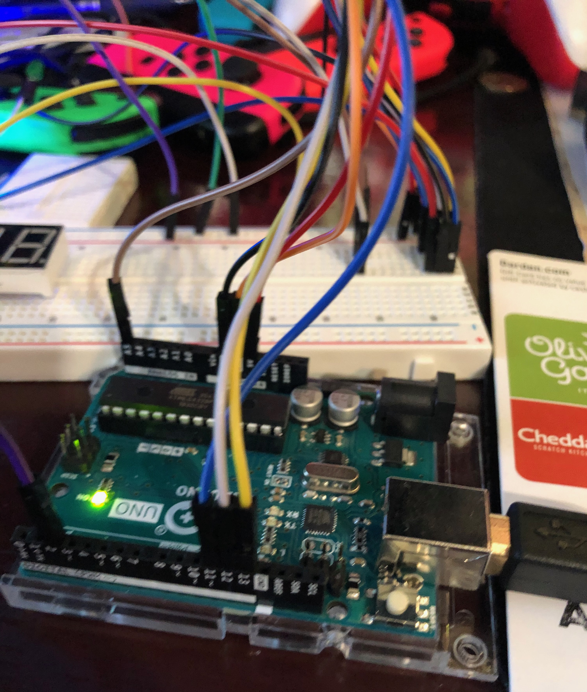
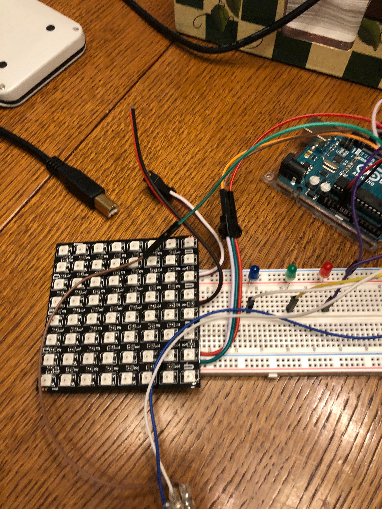

First Sparks
The project that lit up my interest in Electrical Engineering

This was the prototype for my first major project using Arduino. Prior to this, I had worked with Arduino in robotics and worked with a myriad of simple sensors for the robot. However, this was the first project I was completing completely on my own which came with many new challenges.
The Competition
In 2019 I joined my schools newly founded Science Olympiads, a club where schools from all over New York meet and compete in several competitions in a variety of disciplines. The challenge I was most eager to partake in was called Detector Building, it was a competition where students had to create a device that could read the temperature of water and output that temperature as well as using a light to indicate if that temperature was cold, temperate, or hot. I had never worked with temperature sensors before, so it was challenging to create a waterproof temperature sensor, but after using some hot glue and rigging I was able to make an accurate temperature sensor that was within 2 degrees of the actual temperature of the water.

A more completed prototype with all the final parts that would be used in the competition
The Fatal Error
The competition was in early February, a month before the shut down in my area. I got to the classroom where the competition was held and spent time checking over my creation making sure everything was in order. To calibrate our devices, we were given 3 cups of water with known temperatures, as expected my device was relatively accurate within 2 degrees of the actual temperature. Then me and my partner were given a proctor who went around with us to different stations to see how well our device performed on cups of water with unknown temperatures. This is where I made my fatal mistake, I was unaware of one rule. The temperature that the device had to output on the display needed to be in Fahrenheit, my device was calibrated for Celsius. The proctor said she had to take the temperature displayed by the device and I couldn’t convert the numbers in my head to give as an answer. The device was highly accurate, and the proctor even complimented us on this. Unfortunately, we did not rank too high at the end of the competition because of this fatal flaw. In the end, this project taught me an important lesson in attention to detail and following instructions. Being given such an open ended and practical challenge was invigorating and helped me learn a lot. This was the first project that sparked my interest in the Field of Electrical Engineering